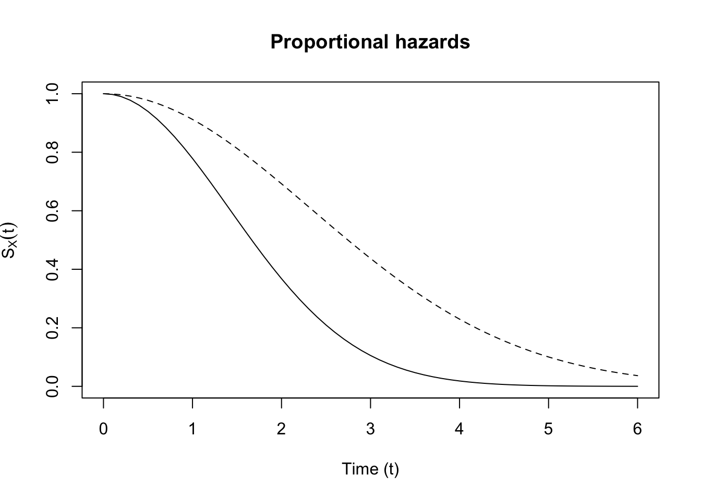
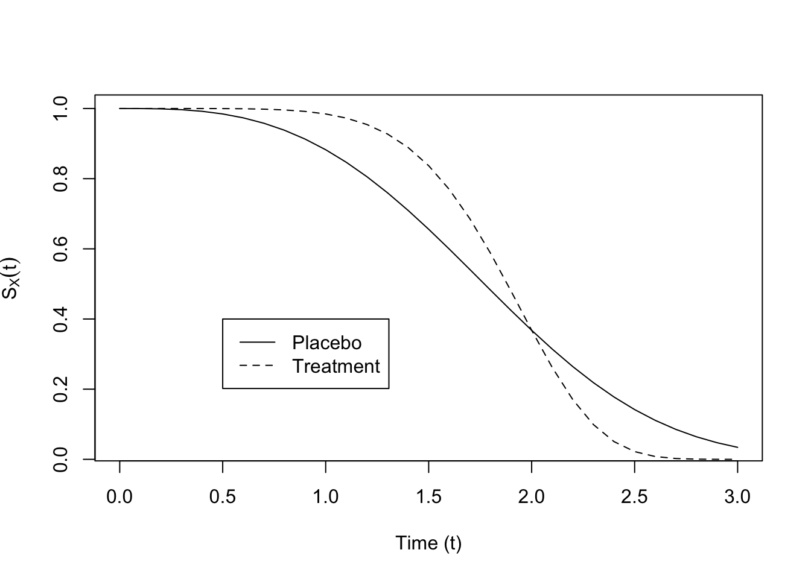

Lecture 7
1 Parametric and nonparametric regression models
This chapter combines content from (Aalen, Borgan, and Gjessing 2008), (Klein, Moeschberger, et al. 2003), (Harrell et al. 2001), (Collett 1994), and (Keener 2010).
Thus far we have dealt exclusively with simple univariate estimation. More often than not, we will also have covariates associated with our failure time observations. Let the observed failure data, be, as usual \(X_i\) is time to failure, \(C_i\) is time to censoring, \(T_i = \min(X_i, C_i)\), is the observed event time, and \(\delta = \mathbbm{1}\left(X_i \leq C_i\right)\) is the censoring indicator. Suppose we also have covariates for each individual \(i\) \(\mathbf{z}_i \in \R^k\). These could be age, sex at birth, comorbidities. Over a short enough timespan, these covariates can be considered fixed over time. Other covariates, like blood pressure, or time since last colonoscopy, would be time varying covariates, which we’ll denote as \(\mathbf{z}(x)_i\).
Much of our study has been on the hazard function \(\lambda(t)\). We’ll consider this parameterized by a vector of parameters \(\boldsymbol{\theta}\), so we’ll write \(\lambda(t \mid \boldsymbol{\theta})\) for the hazard function. In order to incorporate covariates into the hazard rate, we’ll work with relative risk regression, or \[\lambda_i(t) = \lambda_0(t \mid \boldsymbol{\theta}) r(\boldsymbol{\beta}, \mathbf{z}_i)\] where \(r\) is a function \(\R \to \R^+\). Note that this assumes that all individuals share a common baseline hazard, \(\lambda_0(t \mid \boldsymbol{\theta})\), and have time-invariant, individual relative risk contributions \(r(\boldsymbol{\beta},\boldsymbol{z}_i)\). A common choice is that \(r(\boldsymbol{\beta},\boldsymbol{z}_i) \equiv \exp(\boldsymbol{z}_i^T \boldsymbol{\beta})\).
The function is called the relative risk function because when we compare the hazard rates for two individuals \(i\) and \(j\), the common baseline hazard drops out of the comparison: \[\frac{\lambda_i(t)}{\lambda_j(t)} = \exp(\boldsymbol{z}_i)^T \boldsymbol{\beta}) / \exp(\boldsymbol{z}_j^T \boldsymbol{\beta}).\] Of course, the above holds with general \(r(\boldsymbol{\beta},\boldsymbol{z}_i)\). Let’s see what this implies for the survival function for \(i\) vs. \(j\): \[\begin{align*} S_i(t) & = \exp\left(-\int_0^t e^{\mathbf{z}_i^T \boldsymbol{\beta}} \lambda_0(u \mid \boldsymbol{\theta}) du\right)\\ & = \exp\left(-\int_0^t \lambda_0(u \mid \boldsymbol{\theta}) du \right)^{e^{\mathbf{z}_i^T \boldsymbol{\beta}}} \\ & = \left(\exp\left(-\int_0^t \lambda_0(u \mid \boldsymbol{\theta}) du\right)^{e^{\mathbf{z}_j^T \boldsymbol{\beta}}}\right)^{\frac{e^{\mathbf{z}_i^T \boldsymbol{\beta}}}{e^{\mathbf{z}_j^T \boldsymbol{\beta}}}} \\ & = \left(\exp\left(-\int_0^t \lambda_0(u \mid \boldsymbol{\theta}) du\right)^{e^{\mathbf{z}_j^T \boldsymbol{\beta}}}\right)^{e^{(\mathbf{z}_i^T - \mathbf{z}_j^T) \boldsymbol{\beta}}} \\ & = S_j(t)^{e^{(\mathbf{z}_i^T - \mathbf{z}_j^T) \boldsymbol{\beta}}} \end{align*}\] What this means is that the survival curves never cross. To see why, note that \(S_i(0) = S_j(0) = 1\), and WLOG, suppose \((\mathbf{z}_i^T - \mathbf{z}_j^T) \boldsymbol{\beta} \leq 0\). Then \(S_i(t) \geq S_j(t)\) for all \(t\). See (Figure 1) for a demonstration of proportional hazards.
See (Figure 1) for a demonstration of proportional hazards and (Figure 2) for a demonstration of survival functions which do not exhibit proportional hazards.

Proportional hazards (or relative risk) models assume that the survival functions never cross, which is a strong assumption.
Let’s do a simple example.
Example 1.1. Simple exponential regressionThe following example is adapted from (Collett 1994). Suppose we have individuals grouped into two groups, groups 1 and 2, and let \(\mathbf{z}_i\) equal \(1\) for those in group 2 and \(0\) for those in group 1. Suppose further we have noninformative censoring, parameter separability, and exponentially distributed survival times with common baseline hazard of \(\lambda\), so we have observed the following dataset: \[\{(t_i, \delta_i, z_i), i = 1, \dots, n\}\] Then the hazard rate for group \(1\) is \(\lambda\), while the hazard in group \(2\) is \(\lambda e^\beta\). Let \(n_1 = \sum_i (1 - z_i)\) and \(n_2 = \sum_i z_i\). Then the likelihood contribution for the individuals for whom \(z_i = 0\) is \[\prod_{i \mid z_i = 0} \lambda^{\delta_i} e^{-\lambda t_i}\] and the likelihood contribution for individuals in group 2 is \[\prod_{i \mid z_i = 1} (\lambda e^\beta)^{\delta_i} e^{-\lambda e^{\beta} t_i}\] We can simplify this. Let \(r_1 = \sum_i (1 - z_i) \delta_i\), and let \(r_2 = \sum_i z_i \delta_i\). Let \(T_1 = \sum_i (1 - z_i) t_i\), and \(T_2 = \sum_i z_i t_i\). Then the joint likelihood may be written: \[\lambda^{r_1} e^{-\lambda T_1} (\lambda e^{\beta})^{r_2} e^{-\lambda e^\beta T_2} = \lambda^{r_1 + r_2} e^{-\lambda T_1} e^{r_2 \beta} e^{-\lambda e^\beta T_2}.\] Let \(\ell(\lambda, \beta)\) be the log-likelihood function. Then the score equations are \[\begin{align*} \frac{\partial}{\partial \lambda} \ell(\lambda, \beta) &: \frac{r_1 + r_2}{\lambda} - T_1 - e^\beta T_2 \\ \frac{\partial}{\partial \beta} \ell(\lambda, \beta) &: r_2 - \lambda e^\beta T_2 \end{align*}\] solving these for the unknowns is \[\begin{align*} \frac{r_1 + r_2}{T_1 + e^\beta T_2} = \lambda \\ \frac{r_2}{\lambda T_2} = e^\beta \end{align*}\] which simplifies to \[\begin{align*} \hat{\lambda} & = \frac{r_1}{T_1} \\ \hat{e^\beta} & = \frac{T_1/r_1}{T_2/r_2} \\ & = \frac{r_2}{T_2}\frac{T_1}{r_1} \end{align*}\] These estimates make sense: The first is the reciprocal of the average survival time for those in Group 1, and the second is the ratio of the average survival times in each group.
We can show using [exmp:mle-exp] that both of these estimators converge a.s. to the true values. \(\frac{r_2}{T_2} \overset{\text{a.s.}}{\to} \lambda e^{\beta}\), \(\frac{T_1}{r_1} \overset{\text{a.s.}}{\to} \frac{1}{\lambda}\)
Let’s find the asymptotic variance of the estimand \(\beta\)
\[\begin{align} \frac{\partial}{\partial \lambda}\left(\frac{\partial}{\partial \lambda}\ell(\lambda, \psi)\right)& = -\frac{r_1 + r_2}{\lambda^2} \\ \frac{\partial}{\partial \beta}\left(\frac{\partial}{\partial \lambda}\ell(\lambda, \psi)\right)& = -e^\beta T_2 \\ \frac{\partial}{\partial \beta}\left(\frac{\partial}{\partial \beta}\ell(\lambda, \psi)\right)& = -\lambda e^\beta T_2 \end{align}\] Then the observed information matrix is \[\begin{align} \begin{bmatrix} \frac{r_1 + r_2}{\lambda^2} & e^\beta T_2 \\ e^\beta T_2 & \lambda e^\beta T_2 \end{bmatrix} \end{align}\] which has the inverse: \[\begin{align} \frac{1}{\frac{(r_1 + r_2)e^\beta T_2}{\lambda} - e^{2 \beta} T_2^2}\begin{bmatrix} \lambda e^\beta T_2 & -e^\beta T_2 \\ -e^\beta T_2 & \frac{r_1 + r_2}{\lambda^2} \end{bmatrix} \end{align}\] So the plug-in standard error for \(\beta\) is \[\sqrt{\frac{\frac{r_1 + r_2}{\lambda^2}}{\frac{(r_1 + r_2)e^\beta T_2}{\lambda} - e^{2 \beta} T_2^2}}\] Plugging in the MLEs gives \[\sqrt{\frac{\frac{r_1 + r_2}{(r_1 / T_1)^2}}{\frac{(r_1 + r_2)\frac{T_1r_2}{r_1}}{r_1 / T_1} - (\frac{T_1r_2}{r_1})^2 }} = \sqrt{\frac{r_1 + r_2}{r_1 r_2}}\] We can use this expression to generate an asymptotic confidence interval for \(\beta\): \[\begin{align*} P(\beta \in C^\beta) = P\left(\beta \in \left(e^{\hat{\beta}} - z_{1-\alpha/2} \sqrt{\frac{r_1 + r_2}{r_1 r_2}}, e^{\hat{\beta}} + z_{1-\alpha/2} \sqrt{\frac{r_1 + r_2}{r_1 r_2}}\right)\right) \end{align*}\]
References
Aalen, Odd, Ornulf Borgan, and Hakon Gjessing. 2008. Survival and Event History Analysis: A Process Point of View. Springer Science & Business Media.
Collett, David. 1994. Modelling Survival Data in Medical Research. Chapman & Hall.
Harrell, Frank E et al. 2001. Regression Modeling Strategies: With Applications to Linear Models, Logistic Regression, and Survival Analysis. Vol. 608. Springer.
Keener, Robert W. 2010. Theoretical Statistics. Springer Texts in Statistics. New York, NY: Springer New York. https://doi.org/10.1007/978-0-387-93839-4.
Klein, John P, Melvin L Moeschberger, et al. 2003. Survival Analysis: Techniques for Censored and Truncated Data. Vol. 1230. Springer.